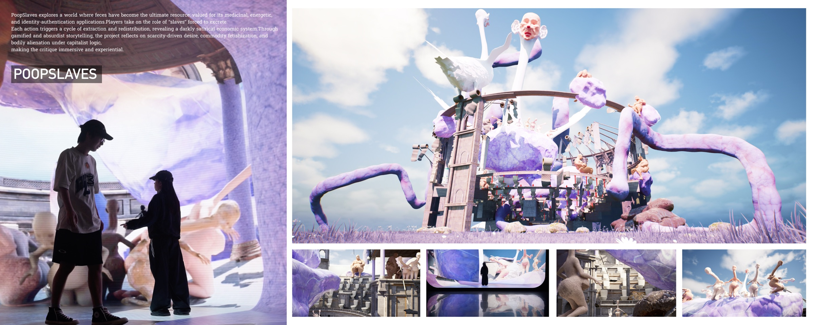
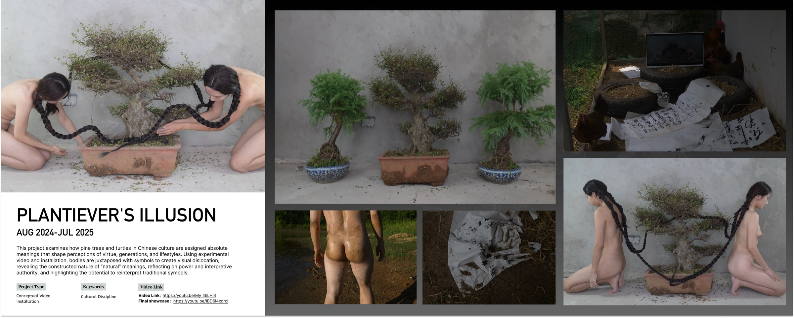
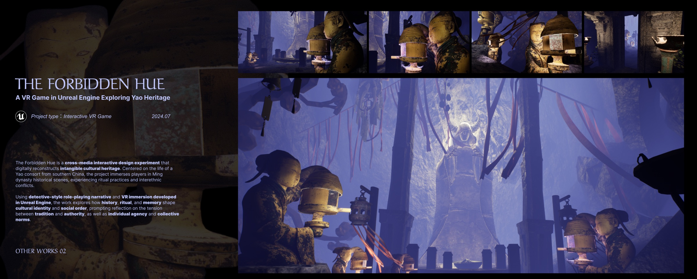
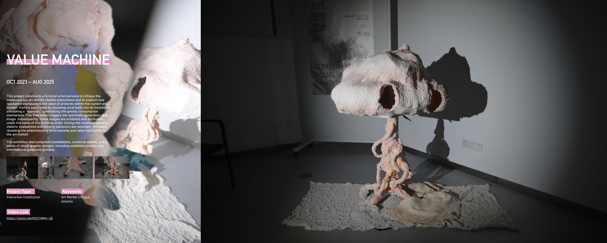
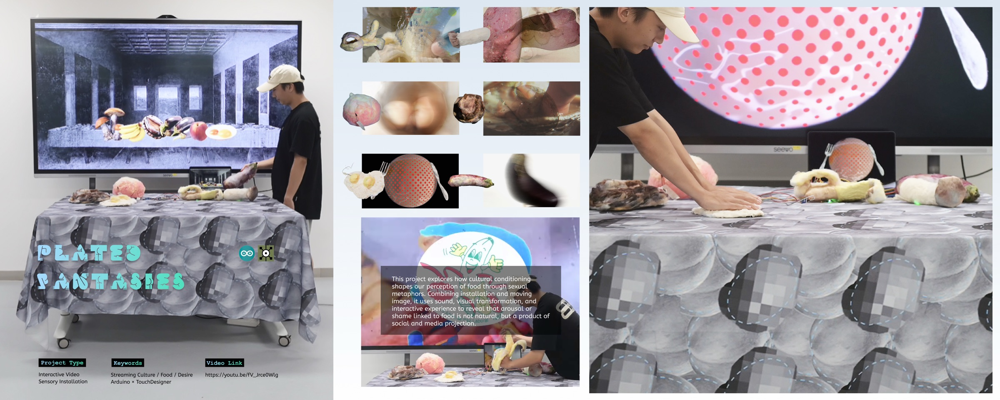
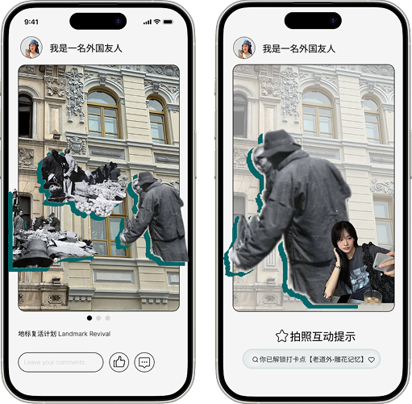
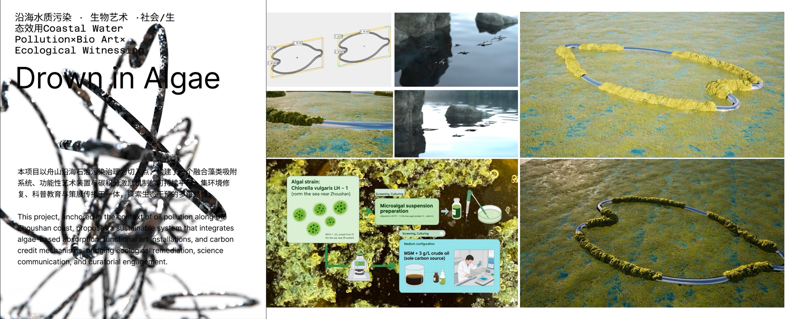
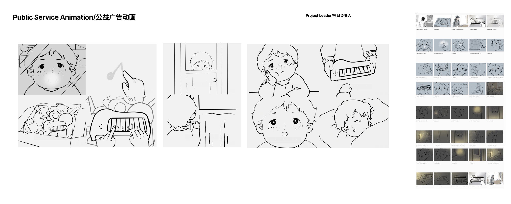

01PoopSlaves
A speculative economy of scarcity, bodily labour and unequal extraction.
VR · Unreal Engine · TouchDesigner · 2024—25Interaction designer · Creative technologist
I design strange, embodied systems that make hidden structures of value, culture and behaviour tangible.
我通过交互、影像与虚拟世界，让不可见的社会结构被身体感知。

01A speculative economy of scarcity, bodily labour and unequal extraction.
VR · Unreal Engine · TouchDesigner · 2024—25
02Unsettling auspicious symbols through moving image and installation.
Conceptual film · Installation · 2024—25
03A cross-media VR game exploring Yao heritage and marginalised histories.
VR game · Cultural heritage · 2024—25
04A fictional artist and participatory machine exposing fabricated art value.
Interactive installation · Arduino · 2023—25 05
05Stench as a social and sensory construct, embodied through responsive puppets.
Installation · Facial detection · 2025
06A sensory installation questioning how food is culturally conditioned.
Interactive installation · TouchDesigner · 2025 07
07An AI wardrobe system combining garment recognition and virtual try-on.
UX · AI wardrobe · 2025
08An augmented-reality experience of urban memory in Harbin.
AR · Heritage · Urban memory · 2025 09
09A video artwork about the institutional production of persecutory delusion.
Experimental film · Video art · 2023
10Coastal pollution, bio-art and ecological witnessing.
Bio-art · Environmental installation · 2025
11Character, storyboard and moving-image development for a public-service film.
Animation · Storyboard · Art directionEleven projects. One practice: using friction, absurdity and participation to make invisible systems felt.
十一个项目，一种持续的实践方法。
Yutong Chen is an interaction designer and creative technologist working across embodied interaction, critical VR, moving image and installation. Her practice uses friction, discomfort and speculative systems to make abstract structures perceptible.
She studied Digital Media Art at Harbin Institute of Technology and joins the Royal College of Art’s Information Experience Design programme in 2026.